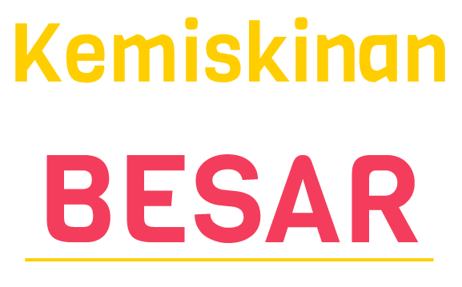

Kemiskinan merupakan salah satu masalah sosial yang sangat besar di Indonesia. Hal tersebut ditandai dengan adanya
berbagai kekurangan dan ketidakberdayaan diri. Kemiskinan merupakan hal yang kompleks karena menyangkut berbagai macam aspek seperti hak untuk terpenuhinya pangan,
kesehatan, pendidikan, pekerjaan, dan sebagainya. Berbagai kekurangan dan ketidakberdayaan tersebut disebabkan baik faktor internal maupun eksternal yang membelenggu, seperti adanya keterbatasan untuk memelihara dirinya sendiri, tidak mampu memanfaatkan tenaga maupun fisiknya untuk
memenuhi kebutuhan dan lain-lain.